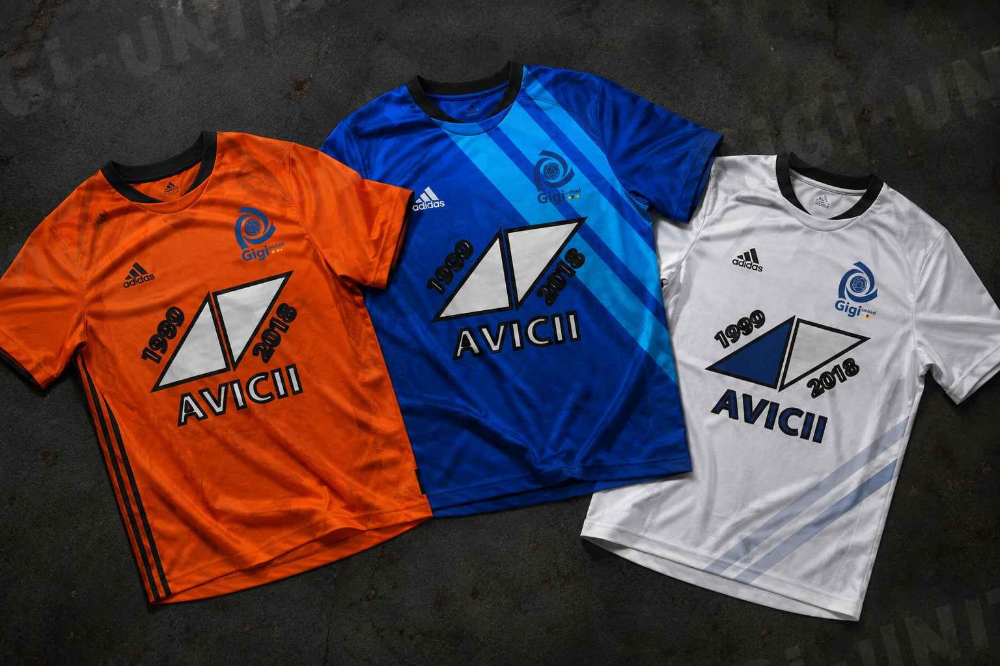
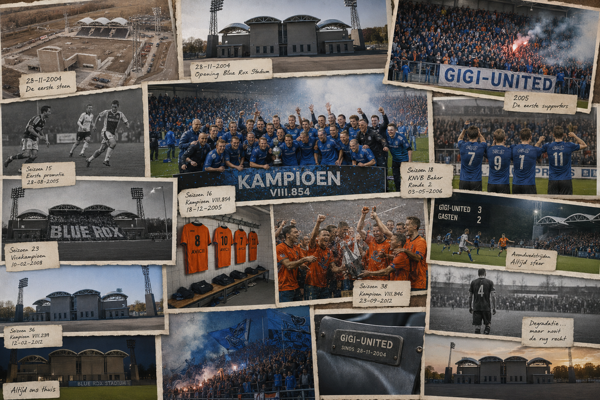

Gigi-United
Museum
Een digitaal clubmuseum met historische shirts, memorabilia, stadionbeelden en kampioensherinneringen.

TenuesHistorische shirts
De oude thuisshirts, uitshirts en keeperstenues uit de eerste clubperiode.
Bekijk collectie Memorabilia
MemorabiliaClubcollectie
Wedstrijdballen, programmaboekjes, sjaals, tickets en herinneringen.
Bekijk collectie
BeeldarchiefOud Blue Rox Stadium
Historische en fictieve stadionbeelden uit verschillende tijdperken.
Open beeldarchief